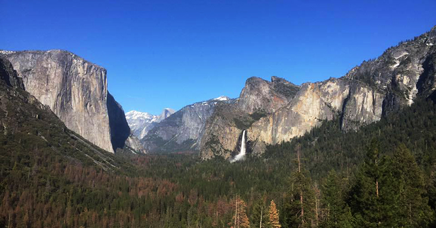

Background
I am currently the Digital Media Coordinator for
St. Mary's Health Care System in Athens, Ga.
I have experience in digital marketing, social media, photography/videography, and brand development.
I'm hoping to take what I know and love and apply them in becoming a web designer.

Goals
I want to become an expert in the process of building responsive and user-friendly web sites as well as increase my knowledge, skills and abilities in:
- HTML
- CSS
- JavaScript
- Ruby
- Rails
I would love to work for an ad agency or web design company helping their clients create an impressive online presence.
Things I Love
I love my wife, a solid hamburger, Georgia Football in the Fall, and traveling to all the national parks in America.
